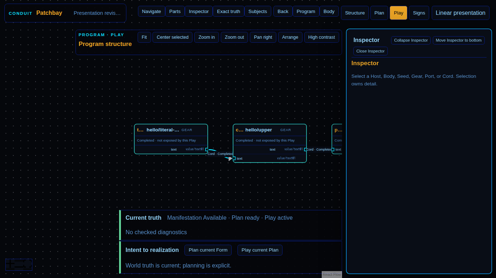

Documentary evidence captured only after semantic assertions passed.

browser-hostprove.browser-hosta7c78dcc1d8d5de34a22f41839b983439cc5faa7patchbay-html.play-lens@1Screenshotimage/png97500chromium151.0.7922.341366x768181b17e1f41e334ba6ca509d0387a7a4c6c3ff692bc8b63c88546dc68ae6d16c84c67a3855f8a1d6c1dd77b933442a555db24474c16163126b289b80fb052d317478060302940a67f8d9ce090d4d00daeea4f0e69acbd056daccc3e3536c34a3bdbc4619b08b047a829292c9a123652237c9d2b7e5be5c515e3227e30a1018601bfbd8acf3c131623ba5825c28b3c2711d836ea14288894353a195756a934b79fpatchbay-html/dom-svg@1same-graph-active-play-state-and-pressure-overlay